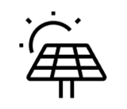
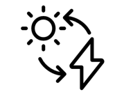
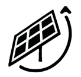

태양광 강도
" 얼마 "

태양광 발전량
" 얼마 "

패널 각도
" 얼마 "
배터리 잔량
" 얼마 "
D-Xola 데이터
실시간 그래프는 로컬 서버 주소를 이용해야 합니다. (D-Xola 팀에게 문의 부탁드립니다.)
환경 데이터
온도 4.2°C
습도 60%
풍향 270°
풍속 3.5m/s
조도센서 실시간 데이터
| 조도센서 1 | 조도센서 2 | 조도센서 3 | 조도센서 4 | 모터 1 각도 | 모터 2 각도 |
|---|